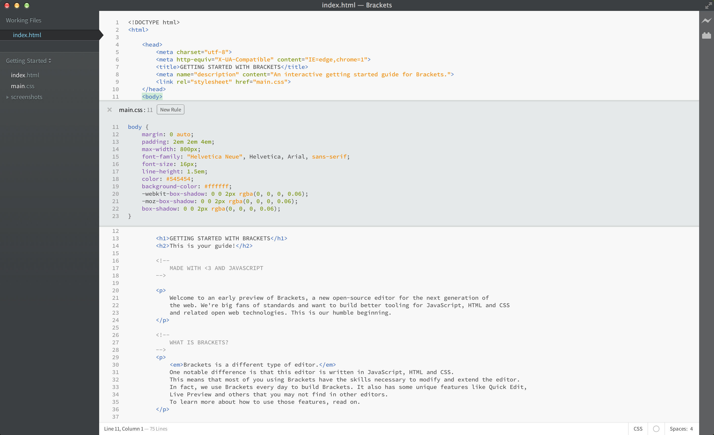

ما هو براكتس؟ هو محرر تعليمات برمجية مفتوح المصدر مخصص لتطوير الويب. يدمج براكتس الأدوات البصرية ليساعدك في عملية تحرير أسرع.
براكتس مختلف عن محررات النصوص التقليدية براكتس لديه الكثير من الأدوات المميزة، مثل التعديل السريع، البث الحي للتعديلات، وأدوات أخرى لن تجدها في محررات النصوص الأخري. براكتس مكتوب بلغة جافاسكريبت، إتش تي إم إيل، و سي إس إس. و هذا يعني أن أغلب مستخدمين براكتس يستطيعون بسهولة تعديل و تطوير براكتس ليطابق إحتياجتهم. في الواقع، نحن نستخدم براكتس كل يوم لتعديل براكتس نفسه. لمعرفة المزيد عن الأدوات الأساسية، تابع بالفراءة.
لتبدأ بتعديل ملفاتك بإستخدام براكتس، فقط قم بفتح المجلد الذي يحتوي على ملفاتك. براكتس تعامل المجلدات على أنها "مشاريع". بذلك أدوات مثل البث الحي و التعديل السريع و النصائح فقط تعمل على الملفات داخل المشاريع.
عندما تكن مستعداً للخروج من هذا المشروع، يمكنك إستخدام القائمة المنسدلة على اليسار للتبديل بين المجلدات(المشاريع). أما الآن، القائمة المنسدلة تظهر "إبدأ" وهذا هو المشروع للملف الذي تقرأه الآن. إضغط على القائمة المنسدلة و إختر "إفتح ملف" لفتح ملف جديد للعمل. يمكن أيضاً إستخدام القائمة المنسدلة مؤخراً للتبديل بين المشاريع التي عملت عليها، مثل ذلك المشروع الحالي.لا مزيد من التبديل بين الملفات، عند تعديل ملف HTML، إستخدم إختصارCMD/Ctrl + E لفتح محرر داخلي سريع و الذي يعرض كل خصائص الcss المتعلقة. قم بالتعديل ثم إضغط ESC لتقوم بالرجوع إلي وضعيه تعديل الHTML الأصلية أو إترك المحرر الداخلي السريع، و سيقوم بالإنطواء. التعديل السريع أيضاً يشمل تعديلات الLESS و الSCSS.
يمكنك إستخدام نفس الإختصار لتعديل أشياء أخرى بالطبع، كالدوال في الجافاسكريبت، الألوان و دوال التوقيت للأنميشن - و نقوم بإضافة الكثير و الكثير مع الوقت.
حالياً، لا تستطيع إستخدام التعديلات السريعة إلا إذا كان الملف في حالة التعديل بالحجم الكامل.
هل تعلم رقصة "إحفظ/أعد التحميل" التي نقوم بها طوال سنين؟ كنت بالتعديل عبر المحرر، ثم تضغط إحفظ، تنتقل للمتصفح و تقوم بعملية إعادة التحميل للصفحة لكي ترى النتيجة أخيراً! مع براكتس، لن تضطر لرقص هذه الرقصات مجدداً.
سيقوم براكتس بفتح إتصال حي بمتصفحك ليقوم بتطبيق التعديلات التلي تقول بها في أكواد الHTML و الCSS بينما أنت تقوم بالتعديل! ربما إختبرت شيء كهذا عن طريق أدوات مخصصة للمتصفح، لكن مع براكتس لن تضطر لنقل أي شيء داخل أو خارج محررك. أي تعديل ستقوم به داخل المحرر، سيتم تطبيقه بشكل حي في متصفحك.
براكتس يجعل معرفة التغيير الطارئة على الصفحة عن طريق تعديل الHTML و الCSS. عندما يؤشر مؤشر الماوس على قاعدة CSS، سيقوم براكتس بالإشارة إلي كل العناصر المتأثرة بهذه القاعدة بداخل كود الHTML الخاص بك. و العكس صحيح في حالة تعديل ملف الHTML.
حالياً، تدعم براكتس البث الحي للغتي الHTML و الCSS. لكن، في الإصدار الحالي التغييرات في ملفات الجافاسكريبت يتم تحميلها أوتوماتيكياً عندما تقم بالحفظ. نقوم حالياً بالعمل على خدمة البث الحي للجافاسكريبت. خدمة البحث الحي تعمل فقط مع جوجل كروم، لكننا نعمل على تعميمها على باقي المتصفحات أيضاً.
للكثير منا الذين لا يتذكرون قيم الHEX و الRGB للألوان، براكتس تجعل ذلك أكثر سهولة عن طريق عرض اللون بالتأشير على قيمته. في ملفات الHTML أو الCSS، فقط قم بالتأشير على أي قيمة للون، و سيقوم براكتس بعرض اللون أوتوماتيكاً. و ذلك يحدث للصور أيضاً، قم بالتأشير فوق رابط الصورة و سيقوم براكتس بعرض الصورة.
بالإضافة لكل هذه الأدوات المبنية بداخل براكتس، مجتمع مستخدمي براكتس الضخم و النامي لمطوري الإضافات قاموا ببناء المئات من الإضافات الذكية التي أضافت الكثير من الوظائف لبراكتس. إذا إحتجت أداة أو خدمة لا توفرها براكتس، ستجدها كإضافة قام ببنائها مستخدم آخر. لتصفح و البحث عن الإضافات المتاحة، إختر ملف > مدير الإضافات وإختر تبويت " المتاح ". عندما تجد إضافة تريدها فقط إضغظ على "تثبيت" بجانب الإضافة.
براكتس مشروع مفتوح المصدر. العديد من مطورين الويب حول العالم يساهمون في بناء محرر تعليمات برمجية أفضل. و العديد منهم أيضاً يقومون ببناء إضافات توسع من إمكانات براكتس. دعنا نعلم إذا كنت تمتلك أي أفكار، شاركها معنا أو قم بالمساهمة مباشرة في براكتس.